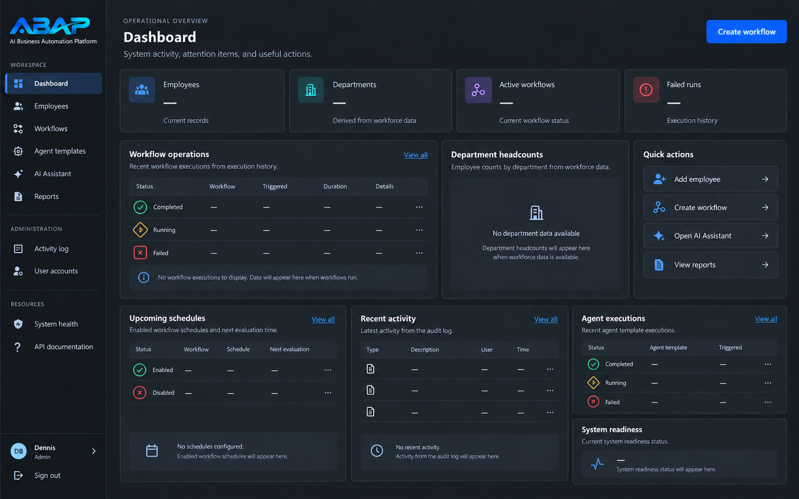

01
Business records
Core operational records and protected documents in one system.
- Employee management
- CRM leads and customers
- Invoices and protected PDF documents
AI Business Automation Platform
ABAP is a Docker-based platform for building and operating practical business workflows from one system. It combines business records, scheduled automation, signed integrations, provider-independent AI services, operational monitoring, encrypted backups, tested recovery procedures, and local AI support.
The problem
Small-business workflows often depend on disconnected tools, repetitive manual work, and automation that is difficult to monitor, secure, or recover after failure.
One Docker-based system brings records, automation, integrations, AI services, monitoring, backups, and recovery procedures together—so practical workflows can be built and operated with their supporting controls in view.
Platform capabilities
ABAP brings business data, workflow execution, integrations, AI, and operational safeguards into one platform.
Core operational records and protected documents in one system.
Scheduled execution and background processing for repeatable work.
Signed connections and AI services that are not tied to one provider.
Persistence, visibility, backups, and procedures for when things go wrong.
Security & recovery
ABAP’s security and reliability principles cover how secrets, integrations, deployment, backups, recovery, local AI, and the public site are handled.
Secrets are kept separate from the codebase.
External webhook integrations use HMAC signatures.
Deployment follows a least-privilege principle.
PostgreSQL backups are encrypted.
Restore and rollback procedures are documented and restore drills are part of the platform.
Local AI stays outside the public cloud deployment, while the public landing page remains available independently of the application server.
Technology
The platform uses established application, automation, data, and local AI technologies.
Product interface
The approved ABAP dashboard brings operational status, workflow activity, schedules, agent executions, and useful actions into a consistent interface.

Project status
Milestones 1 through 7 are complete. Milestone 8 production deployment and HTTPS work is in progress.
Explore the project
Review ABAP’s public repository and the platform’s current implementation.
View the GitHub repository